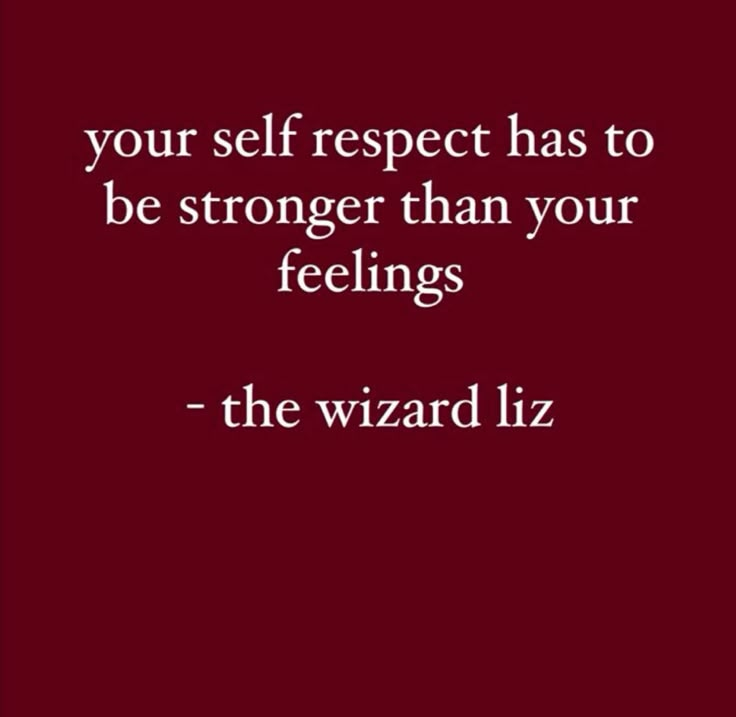

Proyecto pagina principal
Este es mi proyecto que llevare a cabo en la UAC de Cultura Digital II
A continuación mostrare las siguientes paginas
Razones por las que tus relaciones sociales / amorosas no funcionan
Mala elección de compañías
No saber estar solo
Falta de límites y amor propio
Conclusiones
